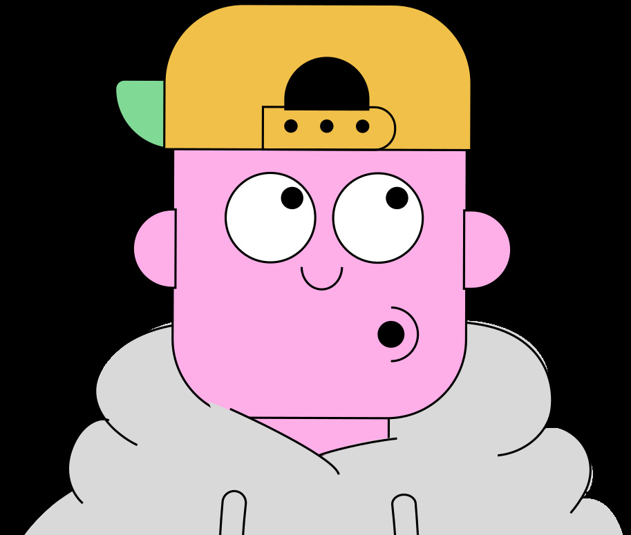

Фритрек и нулевой спринт: Подготовка к работе

Это было самое начало пути. На этом этапе важно было проникнуться основами и настроиться на учёбу. И, возможно, подумать, как новые знания могут повлиять на ваше будущее.
Ваш лорный персонаж Практикума Стас Басов — это буквально я. Уверенный в себе мужчина, которому исполнилось 30 лет (хотя в душе мне всего 18), изъявивший желание попробовать что-то новое. Долго думал, решался, но в итоге я оказался тут благодаря моему другу, который буквально затащил меня на эти крусы, и который в следствии отчислился уже вначале первого спринта 🥺. И что же мне теперь с этим делать?